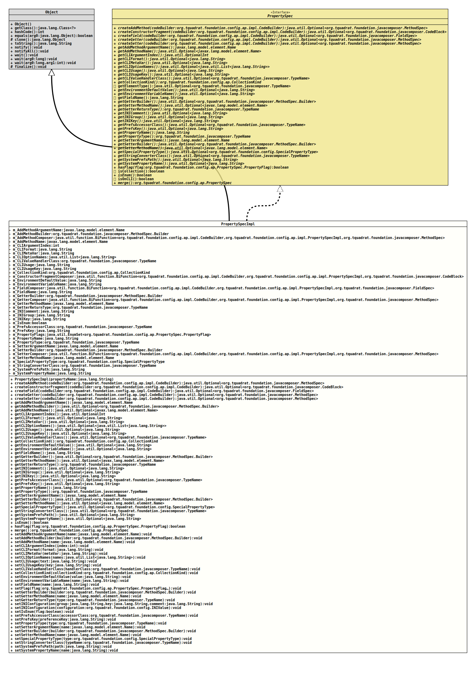

Class PropertySpecImpl
- All Implemented Interfaces:
PropertySpec
PropertySpec.- Author:
- Thomas Thrien (thomas.thrien@tquadrat.org)
- Version:
- $Id: PropertySpecImpl.java 1053 2023-03-11 00:10:49Z tquadrat $
- Since:
- 0.1.0
- UML Diagram
-

UML Diagram for "org.tquadrat.foundation.config.ap.impl.PropertySpecImpl"
{kind=link}
-
Nested Class Summary
Nested classes/interfaces inherited from interface org.tquadrat.foundation.config.ap.PropertySpec
PropertySpec.PropertyFlag -
Field Summary
FieldsModifier and TypeFieldDescriptionprivate NameThe name for the 'add' method's argument.private MethodSpec.BuilderThe builder for the 'add' method of this property.private BiFunction<CodeBuilder, PropertySpecImpl, MethodSpec> The method that creates the 'add' method for this property.private NameThe name for the 'add'' method.private intThe argument index.private StringThe special CLI format.private StringThe CLI meta variable.The names for a CLI option.private StringThe CLI usage text.private StringThe CLI usage key.private TypeNameThe CLI value handler class.private CollectionKindThe kind of collection for this property.private BiFunction<CodeBuilder, PropertySpecImpl, CodeBlock> The method that creates the constructor fragment for the initialisation of this property.private StringThe default value for environment variables or system properties.private StringThe name of the environment variable that is used to initialise this property.private BiFunction<CodeBuilder, PropertySpecImpl, FieldSpec> The method that creates the field for this property.private StringThe name of the field for the property.private MethodSpec.BuilderThe builder for the getter of this property.private BiFunction<CodeBuilder, PropertySpecImpl, MethodSpec> The method that creates the getter for this property.private NameThe name for the getter method.private TypeNameThe return type for the getter method.private StringThe comment for this property when stored in anINIfile.private StringThe group for this property when stored in anINIfile.private StringThe key for this property when stored in anINIfile.private booleanThe flag that indicates whether the property type is anenumtype.private TypeNameThePreferencesaccessor class.private StringThePreferenceskey.private final EnumSet<PropertySpec.PropertyFlag> The property flags.private final StringThe name of the property.private TypeNameThe type of the property.private NameThe name for the setter's argument.private MethodSpec.BuilderThe builder for the setter of this property.private BiFunction<CodeBuilder, PropertySpecImpl, MethodSpec> The method that creates the setter for this property.private NameThe name for the setter method.private SpecialPropertyTypeThe speciality type for this property; usually, this isnull.private TypeNameThe class that implements the String converter for the type of this property.private StringThe path for the SYSTEM preferences node that holds the initialisation data for this property.private StringThe name of the system property that is used to initialise this property. -
Constructor Summary
ConstructorsConstructorDescriptionPropertySpecImpl(String propertyName) Creates a newPropertySpecImplinstance. -
Method Summary
Modifier and TypeMethodDescriptionfinal Optional<MethodSpec> createAddMethod(CodeBuilder codeBuilder) Creates the specification of the 'add' method for this property.createConstructorFragment(CodeBuilder codeBuilder) Creates a code block that is a fragment for the constructor of the new configuration bean and that initialises this property.createField(CodeBuilder codeBuilder) Creates the field specification for this property.createGetter(CodeBuilder codeBuilder) Creates the specification of the getter for this property.createSetter(CodeBuilder codeBuilder) Creates the specification of the setter for this property.final NameReturns the name of the 'add' method's argument.final Optional<MethodSpec.Builder> Returns a builder for the 'add' method for this property.Returns the name of the 'add' method for this property.final OptionalIntReturns the index for an argument on the command line.Returns the special CLI format.Returns the name of the CLI meta variable for this property.Returns the CLI option names.Returns the CLI usage text for this property.Returns the CLI usage key for this property.Returns the CLI value handler class for this property.final CollectionKindReturns the kind of collection for this property.Returns the default value for an environment variable or a system property.Returns the name of the environment variable that is used to initialise this property.final StringReturns the name of the field for the property.final Optional<MethodSpec.Builder> Returns a builder for the getter for this property.Returns the name of the getter method name.final TypeNameReturns the return type of the getter.Returns the comment for this property in theINIfile.Returns the group for this property in theINIfile.Returns the key for this property in theINIfile.Returns thePreferencesaccessor class.Returns thePreferenceskey for this property.final StringReturns the name of the configuration property.final TypeNameReturns the property type.final NameReturns the name of the setter's argument.final Optional<MethodSpec.Builder> Returns a builder for the setter for this property.Returns the name of the setter method name.final Optional<SpecialPropertyType> Return the 'speciality' type for this property.Returns the class that implements the String converter for the type of this property.Returns the path to the SYSTEMPreferencesnode that holds the data for the initialisation of this property.Returns the name of the system property that is used to initialise this property.final booleanChecks whether the given flag is set for this property.final booleanisEnum()Returns the flag that indicates whether the property is anenumtype.final PropertySpecmerge()'Merges' the attributes from a special property with the attributes retrieved from the configuration bean specification and returns a new instance ofPropertySpec.final voidsetAddMethodArgumentName(Name name) Sets the name for the 'add' method's argument.final voidsetAddMethodBuilder(MethodSpec.Builder builder) Sets the builder for the 'add' method of this property.final voidsetAddMethodName(Name name) Sets the name of the 'add'' method for this property.final voidsetCLIArgumentIndex(int index) Sets the index for an argument on the command line.final voidsetCLIFormat(String format) Sets the special CLI format.final voidsetCLIMetaVar(String metaVar) Sets the CLI meta variable.final voidsetCLIOptionNames(List<String> names) Sets the CLI option names.final voidsetCLIUsage(String text) Sets the CLI usage text.final voidsetCLIUsageKey(String key) Sets the CLI usage key.final voidsetCLIValueHandlerClass(TypeName handlerClass) Sets the CLI value handler class.final voidsetCollectionKind(CollectionKind collectionKind) Sets the kind of collection for this property.final voidsetEnvironmentDefaultValue(String value) Sets the default value for an environment variable or a system property.final voidSets the name of the environment variable that provides the (initial) value for this property.final voidsetFieldName(String name) Sets the name of the field for the property.final voidsetFlag(PropertySpec.PropertyFlag... flag) Sets the given flags to the property.final voidsetGetterBuilder(MethodSpec.Builder builder) Sets the builder for the getter of this property.final voidsetGetterMethodName(Name name) Sets the method name for the getter.final voidsetGetterReturnType(TypeName type) Sets the return type for the getter.final voidsetINIConfiguration(String group, String key, String comment) Sets theINIfile configuration for this property.voidsetINIConfiguration(INIValue configuration) Sets theINIfile configuration for this property.final voidsetIsEnum(boolean flag) Sets the flag that indicates whether the property is anenumtype.final voidsetPrefsAccessorClass(TypeName accessorClass) Sets the preferences accessor class for this property.final voidsetPrefsKey(String preferenceKey) Sets the preferences key for this property.final voidsetPropertyType(TypeName type) Sets the property type.final voidsetSetterArgumentName(Name name) Sets the name for the setter's argument.final voidsetSetterBuilder(MethodSpec.Builder builder) Sets the builder for the setter of this property.voidsetSetterMethodName(Name name) Sets the name of the setter method for this property.final voidSets the speciality type for this property.final voidsetStringConverterClass(TypeName typeName) Sets the name for the class that implementsStringConverterfor the type of this property.final voidsetSystemPrefsPath(String path) Sets the path for the SYSTEMPreferencesnode that holds the initialisation data for this property.final voidsetSystemPropertyName(String name) Sets the name of the system property that provides the (initial) value for this property.Methods inherited from class java.lang.Object
clone, equals, finalize, getClass, hashCode, notify, notifyAll, toString, wait, wait, waitMethods inherited from interface org.tquadrat.foundation.config.ap.PropertySpec
getElementType, isCollection, isOnCLI
-
Field Details
-
m_AddMethodArgumentName
The name for the 'add' method's argument. -
m_AddMethodBuilder
The builder for the 'add' method of this property. -
m_AddMethodComposer
The method that creates the 'add' method for this property. -
m_AddMethodName
The name for the 'add'' method. -
m_CLIArgumentIndex
The argument index.- See Also:
-
m_CLIFormat
The special CLI format.- See Also:
-
m_CLIMetaVar
The CLI meta variable.- See Also:
-
m_CLIOptionNames
The names for a CLI option.- See Also:
-
m_CLIValueHandlerClass
The CLI value handler class.- See Also:
-
m_CLIUsage
The CLI usage text.- See Also:
-
m_CLIUsageKey
The CLI usage key.- See Also:
-
m_CollectionKind
The kind of collection for this property. -
m_ConstructorFragmentComposer
The method that creates the constructor fragment for the initialisation of this property. -
m_EnvironmentDefaultValue
The default value for environment variables or system properties. -
m_EnvironmentVariableName
The name of the environment variable that is used to initialise this property. -
m_FieldComposer
The method that creates the field for this property. -
m_FieldName
The name of the field for the property. -
m_GetterBuilder
The builder for the getter of this property. -
m_GetterComposer
The method that creates the getter for this property. -
m_GetterMethodName
The name for the getter method. -
m_GetterReturnType
The return type for the getter method. -
m_INIComment
The comment for this property when stored in anINIfile. -
m_INIGroup
The group for this property when stored in anINIfile. -
m_INIKey
The key for this property when stored in anINIfile. -
m_IsEnum
The flag that indicates whether the property type is anenumtype. -
m_PrefsAccessorClass
The
Preferencesaccessor class.This is used when this property is linked to a preference, but also to initialise it from a SYSTEM preference.
- See Also:
-
m_PrefsKey
The
Preferenceskey.This is used when this property is linked to a preference, but also to initialise it from a SYSTEM preference. In first case, the name is defaulted to the property name, while it is mandatory otherwise.
- See Also:
-
m_PropertyFlags
The property flags. -
m_PropertyName
The name of the property. -
m_PropertyType
The type of the property. -
m_SetterArgumentName
The name for the setter's argument. -
m_SetterBuilder
The builder for the setter of this property. -
m_SetterComposer
The method that creates the setter for this property. -
m_SetterMethodName
The name for the setter method. -
m_SpecialPropertyType
The speciality type for this property; usually, this isnull. -
m_StringConverterClass
The class that implements the String converter for the type of this property. -
m_SystemPrefsPath
The path for the SYSTEM preferences node that holds the initialisation data for this property.- See Also:
-
m_SystemPropertyName
The name of the system property that is used to initialise this property.
-
-
Constructor Details
-
PropertySpecImpl
Creates a newPropertySpecImplinstance.- Parameters:
propertyName- The name of the property.
-
-
Method Details
-
createAddMethod
Creates the specification of the 'add' method for this property.- Specified by:
createAddMethodin interfacePropertySpec- Parameters:
codeBuilder- The factory for the code generation.- Returns:
- An instance of
Optionalthat holds the method specification.
-
createConstructorFragment
Creates a code block that is a fragment for the constructor of the new configuration bean and that initialises this property.- Specified by:
createConstructorFragmentin interfacePropertySpec- Parameters:
codeBuilder- The factory for the code generation.- Returns:
- An instance of
Optionalthat holds the code block.
-
createField
Creates the field specification for this property.- Specified by:
createFieldin interfacePropertySpec- Parameters:
codeBuilder- The factory for the code generation.- Returns:
- An instance of
Optionalthat holds the field specification.
-
createGetter
Creates the specification of the getter for this property.- Specified by:
createGetterin interfacePropertySpec- Parameters:
codeBuilder- The factory for the code generation.- Returns:
- An instance of
Optionalthat holds the method specification.
-
createSetter
Creates the specification of the setter for this property.- Specified by:
createSetterin interfacePropertySpec- Parameters:
codeBuilder- The factory for the code generation.- Returns:
- An instance of
Optionalthat holds the method specification.
-
getAddMethodArgumentName
Returns the name of the 'add' method's argument.- Specified by:
getAddMethodArgumentNamein interfacePropertySpec- Returns:
- The argument name; is probable
nullwhenPropertySpec.getAddMethodName()returnsOptional.empty().
-
getAddMethodBuilder
Returns a builder for the 'add' method for this property.
This is a convenience method that allows to benefit from
JavaComposer.createMethod(ExecutableElement).- Returns:
- An instance of
Optionalthat holds the builder.
-
getAddMethodName
Returns the name of the 'add' method for this property.- Specified by:
getAddMethodNamein interfacePropertySpec- Returns:
- An instance of
Optionalthat holds the name of the add method.
-
getCLIArgumentIndex
Returns the index for an argument on the command line.
The return value will be empty if the property is not a CLI argument.
- Specified by:
getCLIArgumentIndexin interfacePropertySpec- Returns:
- An instance of
OptionalIntthat holds the index. - See Also:
-
getCLIFormat
Returns the special CLI format.- Specified by:
getCLIFormatin interfacePropertySpec- Returns:
- An instance of
Optionalthat holds the format. - See Also:
-
getCLIMetaVar
Returns the name of the CLI meta variable for this property.- Specified by:
getCLIMetaVarin interfacePropertySpec- Returns:
- An instance of
Optionalthat holds the name of the meta variable. - See Also:
-
getCLIOptionNames
Returns the CLI option names. The mandatory first name in the list is the primary name, the optional others are the aliases.
The return value will be empty if the property is not a CLI option.
- Specified by:
getCLIOptionNamesin interfacePropertySpec- Returns:
- An instance of
Optionalthat holds the option names. - See Also:
-
getCLIUsage
Returns the CLI usage text for this property. This text will not be localised.- Specified by:
getCLIUsagein interfacePropertySpec- Returns:
- An instance of
Optionalthat holds the usage text. - See Also:
-
getCLIUsageKey
Returns the CLI usage key for this property. This key is used to retrieve a localised usage text.- Specified by:
getCLIUsageKeyin interfacePropertySpec- Returns:
- An instance of
Optionalthat holds the usage key. - See Also:
-
getCLIValueHandlerClass
Returns the CLI value handler class for this property.- Specified by:
getCLIValueHandlerClassin interfacePropertySpec- Returns:
- An instance of
Optionalthat holds theTypeNamefor the handler class. - See Also:
-
getCollectionKind
Returns the kind of collection for this property.- Specified by:
getCollectionKindin interfacePropertySpec- Returns:
- The collection kind.
-
getEnvironmentDefaultValue
Returns the default value for an environment variable or a system property. This is used to initialise this property when it has the annotation
@EnvironmentVariableor@EnvironmentVariable, but no value is provided.A default value is mandatory when the annotated property has a primitive type.
- Specified by:
getEnvironmentDefaultValuein interfacePropertySpec- Returns:
- An instance of
Optionalthat holds the default value.
-
getEnvironmentVariableName
Returns the name of the environment variable that is used to initialise this property.- Specified by:
getEnvironmentVariableNamein interfacePropertySpec- Returns:
- An instance of
Optionalthat holds the environment variable name. - See Also:
-
getFieldName
Returns the name of the field for the property.- Specified by:
getFieldNamein interfacePropertySpec- Returns:
- The field name.
-
getGetterBuilder
Returns a builder for the getter for this property.- Specified by:
getGetterBuilderin interfacePropertySpec- Returns:
- An instance of
Optionalthat holds the builder.
-
getGetterMethodName
Returns the name of the getter method name. If there is no name for the method, it will not be generated.- Specified by:
getGetterMethodNamein interfacePropertySpec- Returns:
- An instance of
Optionalthat holds the name of the getter method.
-
getGetterReturnType
Returns the return type of the getter. This is not necessarily the same as the property type.- Specified by:
getGetterReturnTypein interfacePropertySpec- Returns:
- The getter's return type.
-
getINIComment
Returns the comment for this property in theINIfile.- Specified by:
getINICommentin interfacePropertySpec- Returns:
- An instance of
Optionalthat holds the comment.
-
getINIGroup
Returns the group for this property in theINIfile.- Specified by:
getINIGroupin interfacePropertySpec- Returns:
- An instance of
Optionalthat holds the group name.
-
getINIKey
Returns the key for this property in theINIfile.- Specified by:
getINIKeyin interfacePropertySpec- Returns:
- An instance of
Optionalthat holds the key.
-
getPrefsAccessorClass
Returns the
Preferencesaccessor class.This is used when this property is linked to a preference, but also to initialise it from a SYSTEM preference.
- Specified by:
getPrefsAccessorClassin interfacePropertySpec- Returns:
- An instance of
Optionalthat holds theTypeNamefor the accessor class. - See Also:
-
getPrefsKey
Returns the
Preferenceskey for this property.This is used when this property is linked to a preference, but also to initialise it from a SYSTEM preference. In first case, the name is defaulted to the property name, while it is mandatory otherwise.
- Specified by:
getPrefsKeyin interfacePropertySpec- Returns:
- An instance of
Optionalthat holds the preferences key for this property. - See Also:
-
getPropertyName
Returns the name of the configuration property.- Specified by:
getPropertyNamein interfacePropertySpec- Returns:
- The name.
-
getPropertyType
Returns the property type.- Specified by:
getPropertyTypein interfacePropertySpec- Returns:
- The property type.
-
getSetterArgumentName
Returns the name of the setter's argument.- Specified by:
getSetterArgumentNamein interfacePropertySpec- Returns:
- The argument name; is probably
nullwhenPropertySpec.getSetterMethodName()returnsOptional.empty().
-
getSetterBuilder
Returns a builder for the setter for this property.- Specified by:
getSetterBuilderin interfacePropertySpec- Returns:
- An instance of
Optionalthat holds the builder.
-
getSetterMethodName
Returns the name of the setter method name. If there is no name for the method, it will not be generated.- Specified by:
getSetterMethodNamein interfacePropertySpec- Returns:
- An instance of
Optionalthat holds the name of the setter method.
-
getSpecialPropertyType
Return the 'speciality' type for this property.- Specified by:
getSpecialPropertyTypein interfacePropertySpec- Returns:
- An instance of
Optionalthat holds the speciality type.
-
getStringConverterClass
Returns the class that implements the String converter for the type of this property.- Specified by:
getStringConverterClassin interfacePropertySpec- Returns:
- An instance of
Optionalthat holds the implementation class forStringConverter.
-
getSystemPrefsPath
Returns the path to the SYSTEMPreferencesnode that holds the data for the initialisation of this property.- Specified by:
getSystemPrefsPathin interfacePropertySpec- Returns:
- An instance of
Optionalthat holds the path. - See Also:
-
getSystemPropertyName
Returns the name of the system property that is used to initialise this property.- Specified by:
getSystemPropertyNamein interfacePropertySpec- Returns:
- An instance of
Optionalthat holds the system property name. - See Also:
-
isEnum
Returns the flag that indicates whether the property is anenumtype.- Specified by:
isEnumin interfacePropertySpec- Returns:
trueif the property type is anenum,falseotherwise.
-
hasFlag
Checks whether the given flag is set for this property.- Specified by:
hasFlagin interfacePropertySpec- Parameters:
flag- The flag to test for.- Returns:
trueif the flag is set,falseotherwise.
-
merge
'Merges' the attributes from a special property with the attributes retrieved from the configuration bean specification and returns a new instance of
PropertySpec. The original instance remains unchanged.If the property is not a special property (the flag
PropertySpec.PropertyFlag.PROPERTY_IS_SPECIALis not set), this instance will be returned.- Specified by:
mergein interfacePropertySpec- Returns:
- The effective property specification.
-
setAddMethodArgumentName
Sets the name for the 'add' method's argument.- Parameters:
name- The name of the argument.
-
setAddMethodBuilder
Sets the builder for the 'add' method of this property.- Parameters:
builder- The builder; can benull.
-
setAddMethodName
Sets the name of the 'add'' method for this property.- Parameters:
name- The name of the setter method.
-
setCLIArgumentIndex
Sets the index for an argument on the command line.- Parameters:
index- The index, starting by 0. A negative value indicates, that the value was not set.- See Also:
-
setCLIFormat
Sets the special CLI format.- Parameters:
format- The format String; can benull.- See Also:
-
setCLIMetaVar
Sets the CLI meta variable.- Parameters:
metaVar- The meta variable; can benull.- See Also:
-
setCLIOptionNames
Sets the CLI option names.
The first entry of the list is the option name, the others are the aliases.
- Parameters:
names- The name and the aliases for the CLI option for this property; can benull, but may not be empty.- See Also:
-
setCLIUsage
Sets the CLI usage text.- Parameters:
text- The usage text; can benull.- See Also:
-
setCLIUsageKey
Sets the CLI usage key.- Parameters:
key- The usage key; can benull.- See Also:
-
setCLIValueHandlerClass
Sets the CLI value handler class.- Parameters:
handlerClass- TheTypeNamefor the value handler class; can benull.- See Also:
-
setCollectionKind
Sets the kind of collection for this property.- Parameters:
collectionKind- The kind of collection.
-
setEnvironmentDefaultValue
Sets the default value for an environment variable or a system property. This is used to initialise this property when it has the annotation
@EnvironmentVariableor@EnvironmentVariable, but no value is provided.A default value is mandatory when the annotated property has a primitive type.
A String with the only the
NULcharacter is treated asnull.- Parameters:
value- The default value.
-
setEnvironmentVariableName
Sets the name of the environment variable that provides the (initial) value for this property.- Parameters:
name- The name of the environment variable.
-
setFieldName
Sets the name of the field for the property.- Parameters:
name- The field name.
-
setFlag
Sets the given flags to the property.- Parameters:
flag- The flags to set.
-
setGetterBuilder
Sets the builder for the getter of this property.- Parameters:
builder- The builder; can benull.
-
setGetterMethodName
Sets the method name for the getter.- Parameters:
name- The method name.
-
setGetterReturnType
Sets the return type for the getter.- Parameters:
type- The getter's return type.
-
setINIConfiguration
Sets theINIfile configuration for this property.- Parameters:
group- The group.key- The key.comment- The comment; can benull.
-
setINIConfiguration
Sets theINIfile configuration for this property.- Parameters:
configuration- The configuration annotation.
-
setIsEnum
Sets the flag that indicates whether the property is anenumtype.- Parameters:
flag-trueif the property type is anenumtype,falseotherwise.
-
setPrefsAccessorClass
Sets the preferences accessor class for this property.- Parameters:
accessorClass- The accessor class; can benull.
-
setPrefsKey
Sets the preferences key for this property.- Parameters:
preferenceKey- The key.
-
setPropertyType
Sets the property type.- Parameters:
type- The type of the property.
-
setSetterArgumentName
Sets the name for the setter's argument.- Parameters:
name- The name of the argument.
-
setSetterBuilder
Sets the builder for the setter of this property.- Parameters:
builder- The builder; can benull.
-
setSetterMethodName
Sets the name of the setter method for this property.- Parameters:
name- The name of the setter method.
-
setSpecialPropertyType
Sets the speciality type for this property.- Parameters:
type- The speciality type.
-
setStringConverterClass
Sets the name for the class that implementsStringConverterfor the type of this property.- Parameters:
typeName- The String converter class; can benull.
-
setSystemPrefsPath
Sets the path for the SYSTEMPreferencesnode that holds the initialisation data for this property.- Parameters:
path- The path.
-
setSystemPropertyName
Sets the name of the system property that provides the (initial) value for this property.- Parameters:
name- The name of the system property.
-